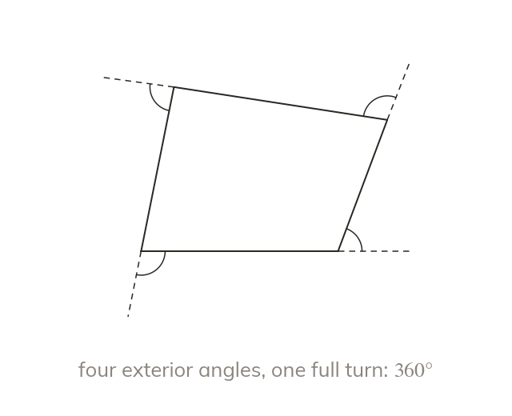

Exterior angles make one full turn
The exterior angles of any polygon sum to Walking round the shape is one full turn.
Walking once round any polygon turns through one full turn, so its exterior angles always sum to Each exterior angle sits between one side and the extension of the side before it.